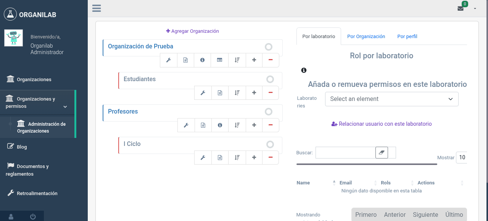
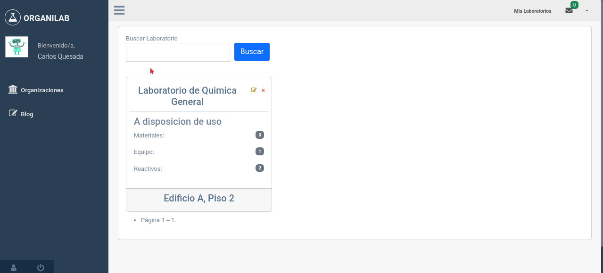

8. Guía del Administrador
Esta guía paso a paso le ayudará a configurar el sistema de permisos de Organilab desde cero. Siga estos pasos en orden para una configuración exitosa.
Paso 1: Crear la organización raíz
La organización raíz es el punto de partida de toda la estructura. Representa a su institución completa.
- Ingrese a Organilab con su cuenta de administrador.
- Acceda a la sección de Administración de Permisos desde el menú principal.
- Haga clic en "Crear organización".
- Ingrese el nombre de su institución (ej: "Universidad Nacional de Costa Rica"). No seleccione organización padre — esto la convierte en organización raíz.
- Guarde la organización.

Formulario de creación de organización raíz
Paso 2: Crear organizaciones hijas (sedes, facultades)
Ahora construya la jerarquía creando las organizaciones hijas que representan las subdivisiones de su institución.
- En el árbol de organizaciones, haga clic en la organización raíz.
- En la ventana emergente, seleccione "Agregar organización hija".
- Ingrese el nombre (ej: "Sede Central") y guarde.
- Repita para cada sede, facultad o unidad de su institución.
Creación de una organización hija desde el árbol jerárquico
Estructura sugerida para una universidad:
| Nivel | Ejemplo | Acción |
|---|---|---|
| Raíz | Universidad Nacional | Crear como org. raíz |
| Nivel 1 | Sede Central, Sede Chorotega, Sede Brunca | Hijas de la universidad |
| Nivel 2 | Facultad de Ciencias, Escuela de Química | Hijas de cada sede |
Paso 3: Crear laboratorios
Con la estructura organizacional lista, proceda a crear los laboratorios y asociarlos a sus organizaciones correspondientes.
- Desde la vista de la organización donde desea crear el laboratorio, haga clic en "Crear laboratorio".
- Complete la información del laboratorio: nombre, ubicación y organización.
- Guarde el laboratorio.
- Repita para cada laboratorio de su institución.
Formulario de creación de laboratorio asociado a una organización
Paso 4: Definir roles
Antes de agregar usuarios, defina los roles que necesitará su institución. Piense en las funciones que desempeñan las personas en sus laboratorios.
Roles recomendados para comenzar
| Rol | Permisos sugeridos | ¿Para quién? |
|---|---|---|
| Administrador de Lab | Todos los permisos de laboratorio, usuarios y configuración | Responsable del laboratorio |
| Regente Químico | Ver sustancias, SGA, etiquetas, MSDS, zonas de riesgo, reportes | Regente de la sede/facultad |
| Técnico | Gestionar inventario, muebles, estantes, movimientos | Personal técnico del laboratorio |
| Docente | Consultar inventario, reservaciones, ver procedimientos | Profesores que usan el laboratorio |
| Consulta | Solo lectura de inventario y sustancias | Estudiantes, visitantes, auditores |
- Haga clic en la organización donde desea crear el rol.
- Seleccione "Agregar rol".
- Ingrese el nombre y opcionalmente una descripción del propósito del rol.
- Si existe un rol similar, puede copiar sus permisos como punto de partida.
- Guarde y luego ajuste los permisos según sea necesario.
Formulario de creación de rol con selección de permisos
Paso 5: Registrar usuarios
Ahora registre a las personas que utilizarán el sistema.
- Desde la organización correspondiente, seleccione "Agregar usuario".
- Complete los datos del usuario: nombre, correo electrónico, identificación.
-
Seleccione el tipo de usuario en la organización:
- Administrador: Para quienes gestionarán la organización
- Gestor de Laboratorio: Para responsables de laboratorios
- Usuario de Laboratorio: Para el resto del personal
- Guarde. El usuario recibirá sus credenciales de acceso.
Formulario de registro de usuario en una organización
Paso 6: Asignar roles a usuarios
Con los usuarios registrados y los roles definidos, proceda a asignar los roles apropiados a cada usuario.
Opción A: Asignar por laboratorio
Use esta opción cuando el usuario solo necesita acceso a un laboratorio específico.
- En la gestión de permisos, seleccione la pestaña "Por Laboratorio".
- Seleccione el laboratorio.
- Busque al usuario y seleccione el o los roles que desea asignarle.
- Haga clic en "Agregar" para añadir los roles.
Asignación de roles por laboratorio
Opción B: Asignar por organización
Use esta opción cuando el usuario necesita acceso a todos los laboratorios de una organización (ej: regente químico, auditor).
- En la gestión de permisos, seleccione la pestaña "Por Organización".
- Seleccione la organización.
- Busque al usuario y seleccione los roles.
- Haga clic en "Agregar".
Asignación de roles por organización
Paso 7: Verificar la configuración
Después de configurar todo, verifique que los permisos funcionan correctamente.
- Revise el resumen: En la gestión de permisos, verifique que cada usuario tiene los roles correctos en los laboratorios/organizaciones correctos.
- Prueba con un usuario: Si es posible, inicie sesión con una cuenta de prueba para verificar que solo puede acceder a lo que le corresponde.
- Verifique la herencia: Si asignó permisos a nivel de organización, confirme que el usuario puede acceder a los laboratorios hijos.
- Documente: Registre qué roles creó, qué permisos incluyen, y quién tiene cada rol. Esta documentación es valiosa para auditorías.

Vista de resumen de permisos mostrando usuarios, roles y laboratorios
Lista de Verificación del Administrador
| Tarea | Estado | |
|---|---|---|
| Organización raíz creada | Pendiente | |
| Sedes/facultades creadas como organizaciones hijas | Pendiente | |
| Laboratorios creados y asociados a organizaciones | Pendiente | |
| Roles definidos con permisos apropiados | Pendiente | |
| Usuarios registrados en sus organizaciones | Pendiente | |
| Roles asignados a usuarios (por lab o por org) | Pendiente | |
| Permisos verificados con pruebas de acceso | Pendiente | |
| Configuración documentada para auditoría | Pendiente |
Referencia: Lista Completa de Permisos
Organilab cuenta con una extensa lista de permisos agrupados por categoría. A continuación se presentan las categorías principales:
- Laboratorio: Ver, agregar, cambiar, eliminar laboratorios
- Sala de Laboratorio: Gestión de salas
- Mueble: Gestión de muebles y estantes
- Sustancias: Gestión de sustancias químicas
- Equipos: Gestión de equipos y tipos de equipo
- Materiales: Gestión de materiales
- Etiqueta SGA: Gestión de etiquetas del SGA
- Indicación de Peligro: Gestión de indicaciones H
- MSDS: Hojas de seguridad de materiales
- Procedimientos: Gestión de procedimientos
- Reservaciones: Sistema de reservaciones
- Informes: Generación y visualización de informes
- Zonas de Riesgo: Gestión de zonas de riesgo
- Incidentes: Reportes de incidentes
Cada categoría generalmente incluye los permisos: Agregar, Ver, Cambiar y Eliminar.
Preguntas Frecuentes
¿Puedo asignar múltiples roles a un mismo usuario?
Sí. Un usuario puede tener diferentes roles en diferentes laboratorios, y también puede tener múltiples roles en el mismo laboratorio u organización. Los permisos se combinan (unión).
¿Qué pasa si elimino un rol que tiene usuarios asignados?
Los usuarios perderán los permisos de ese rol. Si era su único rol, perderán todo acceso a los laboratorios donde lo tenían asignado. Siempre verifique los usuarios asignados antes de eliminar un rol.
¿Puedo mover un laboratorio de una organización a otra?
Los laboratorios están vinculados a una organización. Para cambiar la organización, deberá actualizar la relación del laboratorio. Tenga en cuenta que esto puede afectar los permisos de los usuarios que accedían al laboratorio a través de la organización anterior.
¿Cómo revoco temporalmente el acceso de un usuario?
Puede desactivar al usuario desde la plataforma. Esto impide que inicie sesión sin eliminar sus asignaciones de roles. Cuando necesite reactivarlo, simplemente active su cuenta de nuevo y conservará sus permisos.